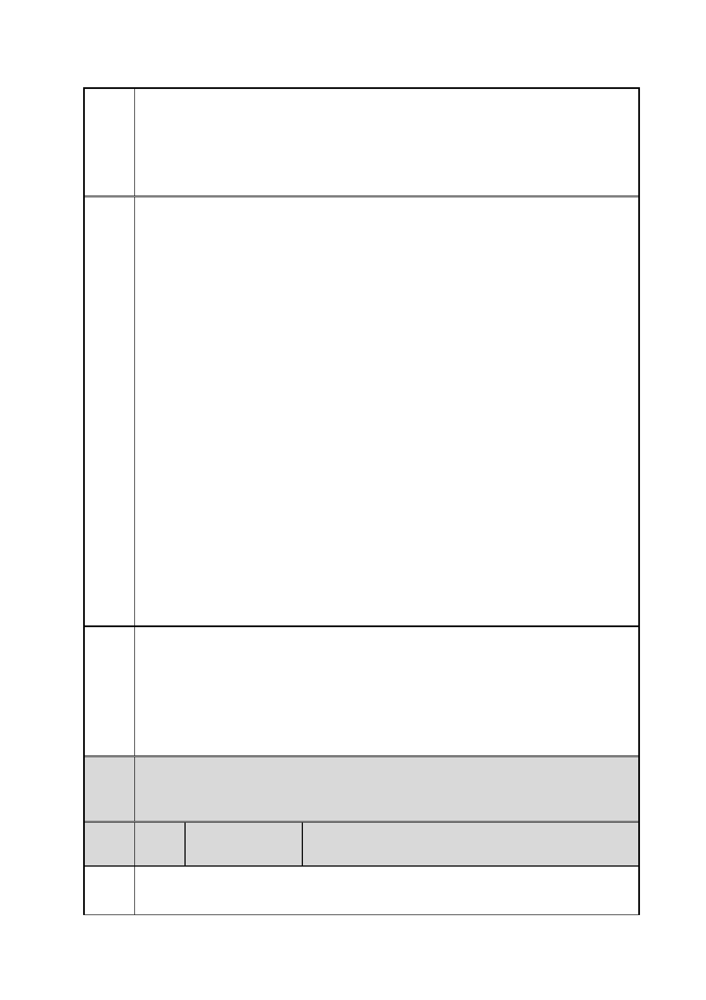

臺北市都市計畫委員會 公民或團體陳情意見綜理表
案
名
市府
回應
委員
會議
決議
編
號
陳情
理由
「變更臺北市信義區逸仙段二小段 33 地號等 21 筆土地（原臺北機廠）
工業區為創意文化專用區、特定專用區、道路及綠地用地主要計畫案」
及「擬定臺北市信義區逸仙段二小段 33 地號等 21 筆土地（原臺北機
廠）創意文化專用區、特定專用區、道路及綠地用地細部計畫暨劃定
都市更新地區計畫案」
工具掉落地板不致損壞。四、整理方便，油污如果累積過厚，
機械袍除即可恢復如新。這種設計可說其他地方難見。雖然部
分因廠區曾淹水而爛損，但大部分還是完整的，這種巧思，值
得全廠保留作為工技藝術與智慧的見證。
五、國家機械工業工技藝術寶庫－台北機廠木模倉庫：台北機廠現存
有數萬件的機械木模，從最小的螺絲，到火車煙囪、汽缸、離
合器盒、動力錘。有大正八年（民國八年）的，有大到比人高
的，應有盡有，這些都是台鐵人百年來，自己用手自己製作工
具、零件的斑斑歷史，是國家最珍貴的工技藝術寶庫，我們除
了在立法院交通委員會會勘時，要求台鐵立刻組織一委員會或
小組展開清點、研究保存的種種工作之外，也要求台北市都市
計畫委員會應讓台北機廠全區保存，以利台北機廠作為鐵道博
物館使用為目的時之最佳都市計畫。
六、鐵路局台北機廠所有氣動、電動的管路、地坪、機器、設備，廠
區各種功能完整的配置建築，都應全區完整保存。而不是只保
存切割後沒有連結、沒有邏輯、看不出工業歷史地景的孤單辦
公室建築。我們要求保存的不只是幾間辦公室而已，我們要求
完整保存工廠全區，要保存的是完整的工業歷史地景，與台北
機廠世界性文化資產的設計智慧。所以都市計畫的使用區分應
該是適用於不破壞，不外加建築，以維護完整地景的使用區分。
一、有關臺北機廠再利用之定位及鐵道文化資產之保留方式，詳如編
號 1 市府回應內容。
二、有關保留本計畫地下引道之建議，查鐵路地下化前火車均由臺北
車站往松山方向進入臺北機廠維修，本計畫西側地下引道係鐵
路地下化後興建之臨時性設施，較無重現歷史記憶之保存價
值，故不納入本計畫鐵道保存範圍。
內容同編號 1。
61 陳情人
陳○恆
我是一個關心文化保留的小市民。最近因緣際會接觸鐵路局台北機
廠，得知該土地的開發計畫正由貴委員會審理當中，在此簡短表達我
第 97 頁/共 154 頁